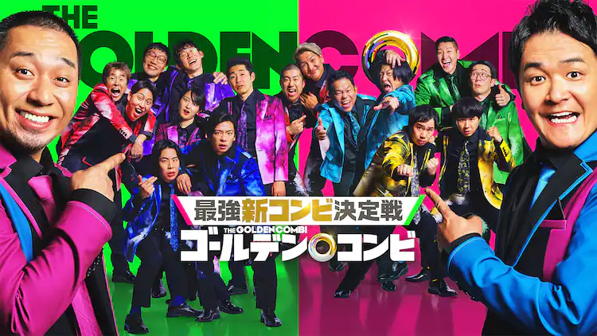
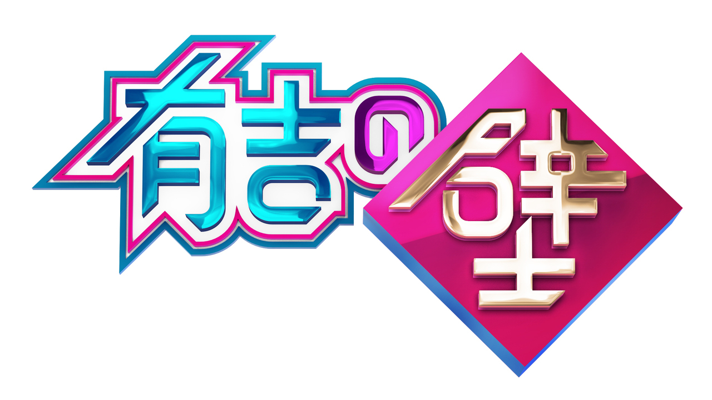
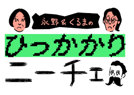

その他作品
トークサバイバー

ゴールデンコンビ

有吉の壁

罵倒村

ひっかかりニーチェ
人気芸人たちが即興トークで勝ち残りを目指すバラエティ番組。
お題は当日まで秘密で、台本なしだからこそ見られる“素のトーク力”が魅力です。時には冷や汗をかきながらも懸命に笑いを取りにいく姿がたまりません。
緊張感あふれるトークバトルの中で、思わぬ爆笑シーンが続出！個人的に超おすすめです。
千鳥／劇団ひとり／おぎやはぎ／チャンス大城／永野／津田篤宏（ダイアン）／野田クリスタル（マヂカルラブリー）／野呂佳代 他
トークサバイバー
ゴールデンコンビ
有吉の壁
罵倒村
ひっかかりニーチェ